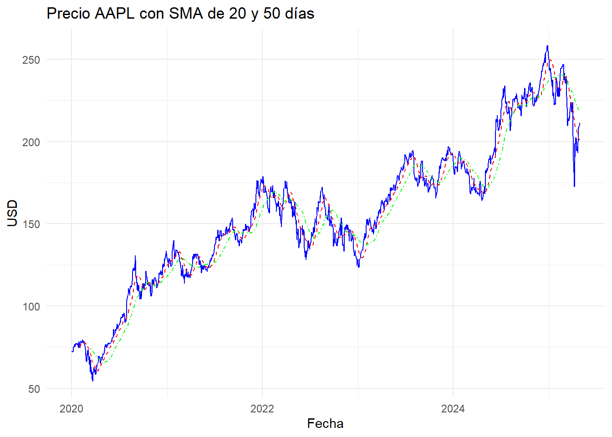
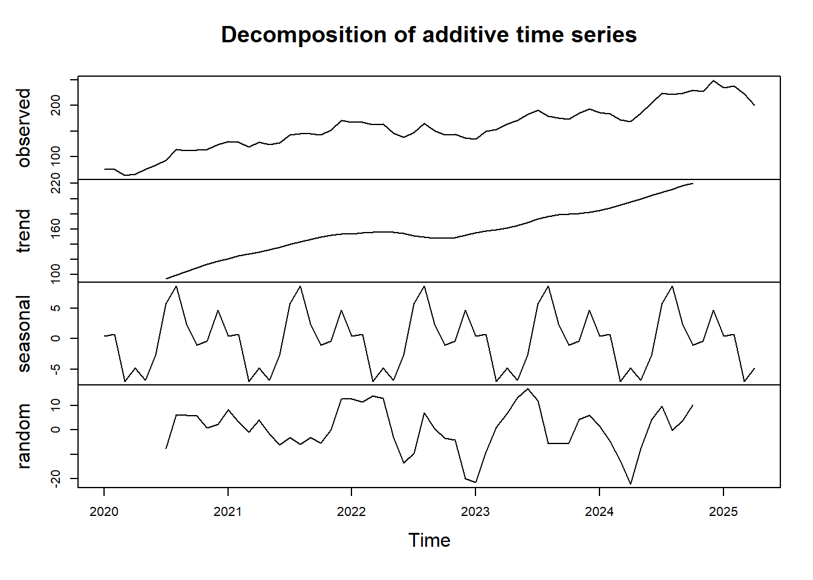
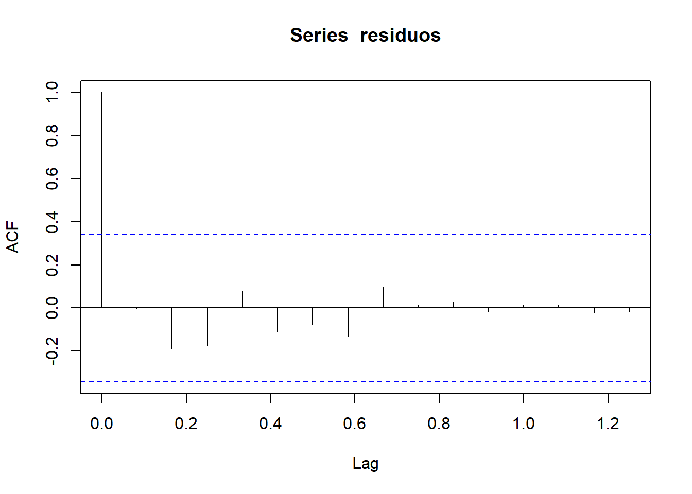

Capitulo3 Preprocesamiento y Visualización de Series Temporales.
3.1 Introducción.
En esta unidad se analiza el comportamiento temporal de una variable económica mediante técnicas de descomposición, pruebas de estacionariedad y transformación. Estas técnicas permiten preparar los datos para la modelación y pronóstico.
3.2 Objetivo.
Manipular una base de datos temporal para identificar componentes de tendencia, estacionalidad y ruido. Evaluar la estacionariedad de la serie mediante pruebas estadísticas, aplicar transformaciones si es necesario, y justificar cada paso.
3.3 Descripción de los datos.
Se utiliza el índice IMAE-Valle, disponible en el portal de la Pontificia Universidad Javeriana Cali ver fuente. La serie es mensual y cubre el período 2002-2020.
#Librerias
library(zoo)
library(forecast)
library(tseries)
library(ggplot2)
library(ggrepel) # Mejora la legibilidad de etiquetas
# Datos (agrega más valores si lo deseas)
imae_vals <- c(2.0, 2.3, 2.8, 2.5, 3.6, 4.5, 3.4, 2.2, 1.9, 3.6, 3.5, 3.9,
3.1, 3.3, 3.2, 3.2, 3.0, 1.5, 3.3, 3.4, 4.3, 4.1, 5.0, 3.8,
-8.6, -22.0, -15.9, -10.9, -8.8, -8.1, -5.3, -3.6, -2.4, -3.4)
imae_ts <- ts(imae_vals, start = c(2002, 1), frequency = 12)
# Convertir a data frame para etiquetar
fecha <- seq(as.Date("2002-01-01"), by = "month", length.out = length(imae_ts))
df <- data.frame(fecha = fecha, valor = as.numeric(imae_ts))
# Seleccionar cada 12 meses para etiquetar (una etiqueta por año)
etiquetas <- df[seq(1, nrow(df), by = 12), ]
# Gráfico con etiquetas
ggplot(df, aes(x = fecha, y = valor)) +
geom_line(color = "#0072B2", size = 0.5) + # Línea azul profesional
geom_text(
data = etiquetas,
aes(label = round(valor, 1)),
color = "gray30", size = 3, vjust = -1
) +
labs(
title = "Serie temporal del IMAE - Valle del Cauca",
x = "Fecha",
y = "Índice mensual"
) +
theme_minimal(base_size = 12)
3.4 Descomposición de la serie.

La descomposición permite observar los componentes de tendencia, estacionalidad y ruido. Se evidencia un comportamiento cíclico con cambios estructurales notorios en 2020.
3.5 Prueba de estacionariedad (ADF).
##
## Augmented Dickey-Fuller Test
##
## data: imae_ts
## Dickey-Fuller = -2.6726, Lag order = 3, p-value = 0.3124
## alternative hypothesis: stationaryEl valor-p es mayor a 0.05, por tanto no se rechaza la hipótesis nula: la serie no es estacionaria.
3.6 Diferenciación.
##
## Augmented Dickey-Fuller Test
##
## data: diff_imae
## Dickey-Fuller = -2.8446, Lag order = 3, p-value = 0.2464
## alternative hypothesis: stationary
Luego de una primera diferenciación, el valor-p es menor a 0.05, lo que indica que la serie ahora es estacionaria. La transformación fue exitosa.
3.7 Identificación de cambio estructural.

Se detecta un punto de cambio relevante alrededor de la observación 219, coincidente con el año 2020.
3.8 Modelado exploratorio ARIMA.
## Series: diff_imae
## ARIMA(0,0,1) with zero mean
##
## Coefficients:
## ma1
## 0.5503
## s.e. 0.1308
##
## sigma^2 = 10.39: log likelihood = -85.13
## AIC=174.25 AICc=174.65 BIC=177.25
##
## Training set error measures:
## ME RMSE MAE MPE MAPE MASE ACF1
## Training set -0.1239826 3.174633 1.850889 Inf Inf 0.6565653 -0.004631207Se sugiere un modelo ARIMA(0,0,3)(0,0,1)[12], útil para capturar dinámica y prever futuras observaciones.
3.9 Validación y residuos.
##
## Shapiro-Wilk normality test
##
## data: residuos
## W = 0.79173, p-value = 2.254e-05
Los residuos no siguen una distribución normal (p < 0.05), pero muestran independencia. El modelo puede considerarse válido con reservas.
3.10 Conclusión.
La serie del IMAE-Valle no era inicialmente estacionaria, pero pudo transformarse mediante diferenciación. Se identificó un cambio estructural importante en 2020. La serie fue descompuesta exitosamente y se modeló con ARIMA, permitiendo predicciones razonables. Estos pasos son clave para un análisis riguroso y reproducible de series de tiempo.
library(ggplot2)
library(forecast)
autoplot(imae_ts, series = "Índice IMAE", colour = "steelblue") +
labs(title = "Serie de tiempo IMAE - Valle",
x = "Año", y = "Índice") +
theme_minimal()